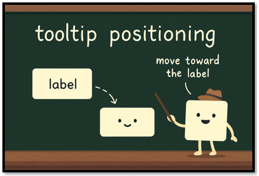
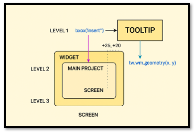
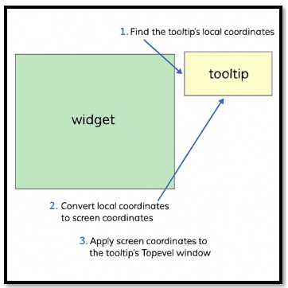

~3 The Methods~
12/8/2025

The show_tip Method
The Opening Line (method signature)
Let’s start with the opening line of the method. You start with the keyword def, this means we are starting to write the method now, so pay attention. Next is the name, the name is asking what do I want this method to do. Print a name, open a page, show a tool tip. So, what am I doing in this method?
def show_tooltip
The Parameter List
The parameter list in a method is a bit different from what you will see in the parameter list of a function. In a function, the parameter list is asking questions. If the name is telling you, what the function wants to do, the parameter list is asking the object what it needs, in order to do it. But in a method, you will start with the word ‘self’ and self is one of the many objects that can be created from the recipe that is contained in the class. self just means, that there is an object out there that wants to be created, and it wants it done to itself, so self is explicitly stated so that each object, (or self) gets the exact recipe used on it.
The event is being passed into the parameter list, because it needs to know what an event is in order to preform some behavior that the tool tip will want to do. Just passing event in, download everything it needs to do any sort of event. It is like handing it a special spell book, and now it can start conjuring.
The Method
So, what is the body of the method doing? One of the things this tool tip wants to be able to do is to just show up. Which is a very important thing for a tool tip. So, it needs to create the window for it to sit in. But starting with an if statement protects the darn code from blowing up when you run it. Or you don’t want it to do that, it throws a lot of squiggly angry lines at you, put some really strange looking jargon in the terminal, and will just refuse to do anything until you fix it. So, yes in most cases exspecally if there is some real danger of screw up, you are going to want to throw in an if and have the program, just back out and return to you.
Ok, so once you get this window, how will it behave? Well it is set to Toplevel window, and doing this will make it look like a little floating window above the main project.

Let’s break down the show_tip method
def show_tip(self, event=None):
if self.tip_window or not self.text:
return
x, y, _, cy = self.widget.bbox("insert")
x += self.widget.winfo_rootx() + 25
y += self.widget.winfo_rooty() + cy + 20
self.tip_window = tw = tk.Toplevel(self.widget)
tw.wm_overrideredirect(True)
tw.wm_geometry(f"+{x}+{y}")
label = tk.Label(tw, text=self.text, background="#ffffe0", relief="solid", borderwidth=1)
label.pack(ipadx=5, ipady=2)
We start with the if statement, if things are not right return. It is basically saying if a tooltip is already showing, or there is no text to show, do not do anything. It is a very basic gatekeeper for tooltips.
if self.tip_window or not self.text:
return
The next line is positioning the widget next to the window. The little cy is math that is done behind the scene to determine how far below the cursor the tooltip should appear. Two lines below this line, you will see it is being further calculated.
x, y, _, cy = self.widget.bbox("insert")
This next line of text is used to horizontally position the tool tip so it appears in the right place on the screen — this is specifically being positioned a little to the right of the widget’s insertion point. The widget can be a button, a label or anything else you want to attach a tool tip to.
x += self.widget.winfo_rootx() + 25
This next line creates the actual tooltip window. We're calling it tip_window, and it's an instance of the Toplevel class from the tk library. That class gives our tooltip the ability to float above the main window—like a little popup that doesn’t have a title bar or frame. You import tk at the top of your code to access this magic.
self.tip_window = tw = tk.Toplevel(self.widget)
This next line of code is what turns your window into a tooltip window, if you did not add it, it would have a lot of unnecessary stuff attached to it. It removes, the tiltle bar, borders the minimize/maximize/close buttons and the resizing handles.
tw.wm_overrideredirect(True)

The next line is for positioning the tool tip window, and it will actually take the calculations that were given above, and use them to help position it self.
tw.wm_geometry(f"+{x}+{y}")
We have already learned about the last two lines of the method in the last tutorial. All these two lines are doing is creating a label, and the line after it, is placing it on the window so we can see it by using pack.
label = tk.Label(tw, text=self.text, background="#ffffe0", relief="solid", borderwidth=1)
label.pack(ipadx=5, ipady=2)
The hide_tip Method
This one is really easy, it is basically saying, if there is a tooltip window open, destroy it, and then the tip_window should be None (gone)
def hide_tip(self, event=None):
if self.tip_window:
self.tip_window.destroy()
self.tip_window = None
The Config method
We actually just added this method this week, and you would use this to change how the label on the tooltip looks. **kwargs, is interesting. This is because it allows us to add any number of styles to an object. In this case it is our label. So, we do not need to know how the object wants to style itself. It might want to do ten things to itself, or it may only want to add two styles. And no matter what is given to it, it is not going to break.
def config(self, **kwargs):
if self.label:
self.label.config(**kwargs)
The Full ToolTip Class now
import tkinter as tk
class ToolTip:
def __init__(self, widget, text):
self.widget = widget
self.text = text
self.tip_window = None
self.id = None
self.x = self.y = 0
self.label = None
# Bind mouse events to show/hide tooltip
self.widget.bind('<Enter>', self.on_enter)
self.widget.bind('<Leave>', self.on_leave)
def on_enter(self, event=None):
self.showtip()
def on_leave(self, event=None):
self.hidetip()
def showtip(self):
if self.tip_window or not self.text:
return
try:
x = self.widget.winfo_rootx() + 25
y = self.widget.winfo_rooty() + 25
except tk.TclError:
return
self.tip_window = tw = tk.Toplevel(self.widget)
tw.wm_overrideredirect(True)
tw.wm_geometry(f"+{x}+{y}")
self.label = tk.Label(tw, text=self.text, justify=tk.LEFT,
background="#ffffe0", relief=tk.SOLID, borderwidth=1)
self.label.pack(ipadx=1)
def hidetip(self):
tw = self.tip_window
if tw:
tw.destroy()
self.tip_window = None
def config(self, **kwargs):
if self.label:
self.label.config(**kwargs)
Well, that is about it for this week, we have reviewed what these methods actually mean that have been created inside of our class.